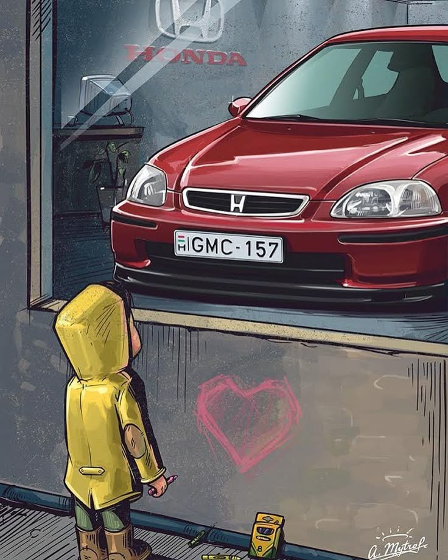
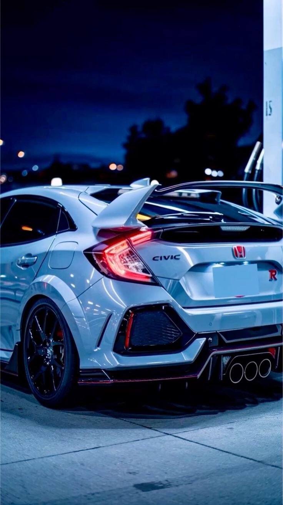
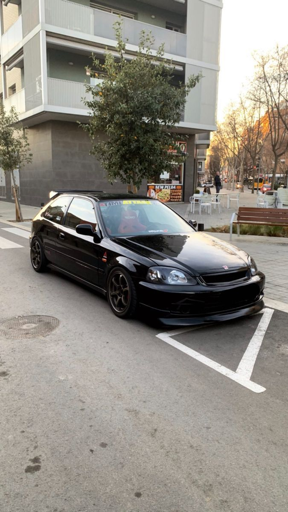
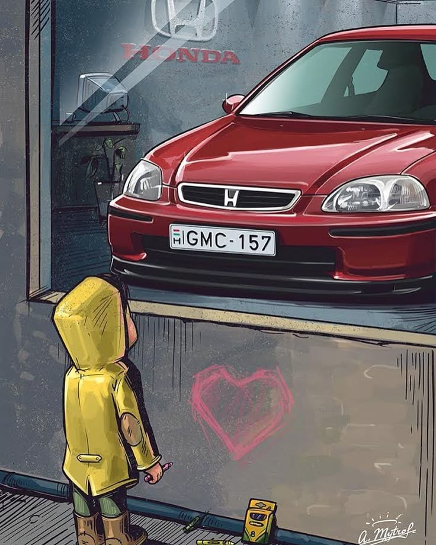
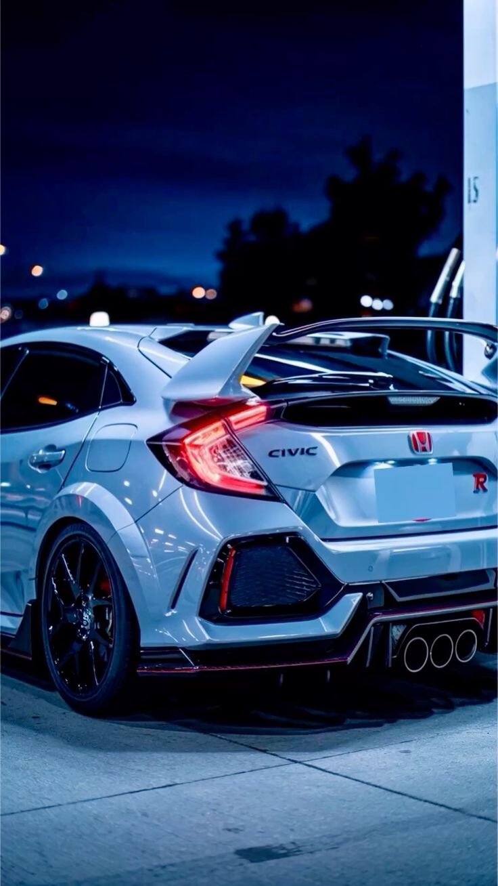
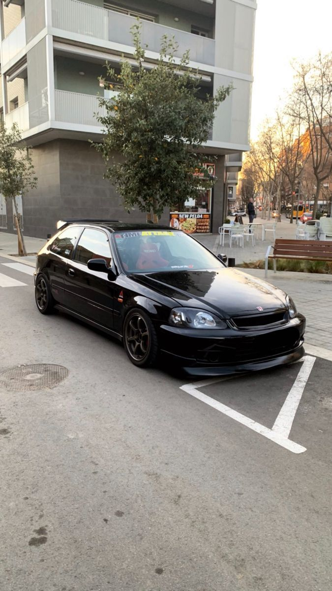

Honda Civic
The Honda Civic is an iconic compact car loved worldwide for its reliability, sporty design, and customization potential. The Civic has a rich history in the tuning and stance community.
This stanced Civic features coilover suspension, aggressive camber, and custom wheels wrapped in stretched tires. Its sleek body lines and lowered stance make it a standout in any car meet or show.
Known for being lightweight and nimble, the Civic perfectly balances performance and style in the stance culture.
WHERE WILL YOU FIND IT
The stanced Civic is parked at *Spot C5* near the main entrance lounge.